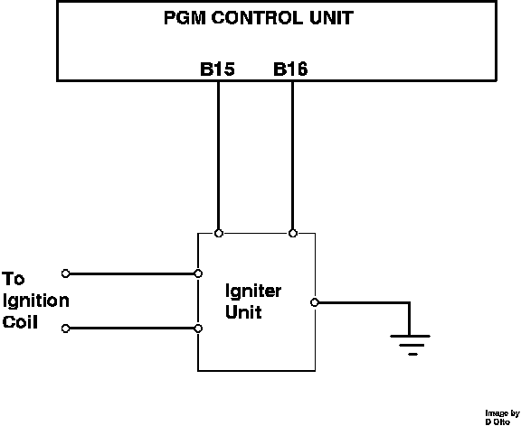

Igniter Signal
Ignition Output Signal:

The ignition output signal is generated by the ECU from terminals B15 and B16. The signal is used by the igniter to provide the primary signal necessary to fire the ignition coil. The signal is based upon the information received from the CRANK sensor and modified by other engine operating parameters (i.e. engine load, coolant temperature, air temperature and barometric pressure).